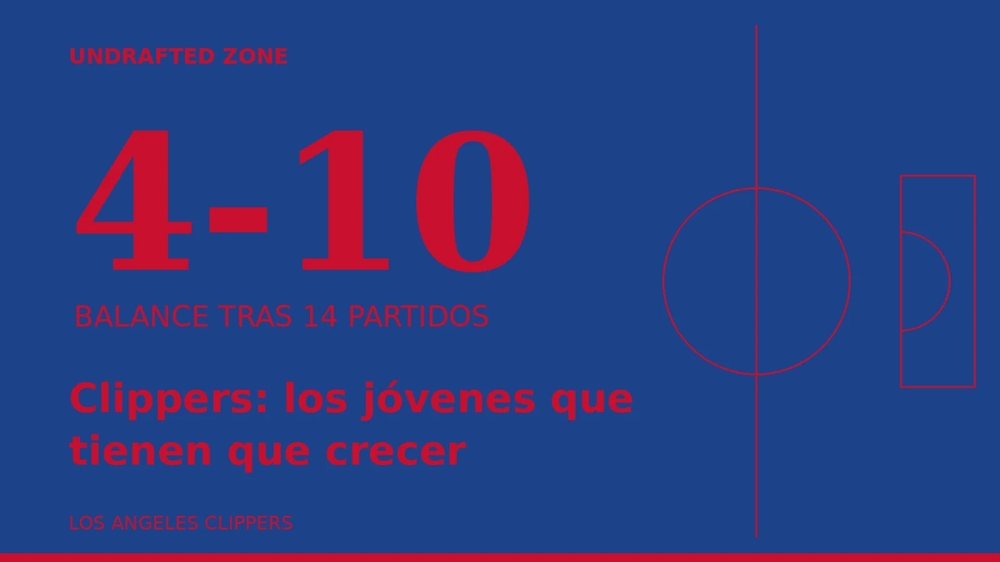

Clippers: los jóvenes que tienen que crecer en un 4-10
Wagler, Dick, Jackson y Sanders juegan con minutos reales en un 4-10. Qué tienen que demostrar los jóvenes de Los Ángeles antes de la vuelta de Ingram.

Los Clippers llegan al 21 de noviembre con un 4-10, decimotercero del Oeste y con Brandon Ingram a punto de volver tras su rotura del tendón de Aquiles. Con datos de ESPN y la comprobación de Basketball-Reference, esta pieza no repasa la guía de temporada publicada el 13 de noviembre. Su ángulo es otro: qué papel tienen los jóvenes de la plantilla en un equipo que necesita resultados ya, y cuánto margen real tienen para crecer en la rotación.
Una plantilla con piezas jóvenes y pocas garantías
El equipo tiene nueve jugadores de 24 años o menos, y solo dos de ellos han jugado más de veinte minutos de media en lo que va de temporada. La edad no es un problema en sí misma, pero el reparto de minutos sí: los Clippers anotan 111’9 puntos por partido y reciben 118’1, con un saldo de -6’2, y la diferencia se explica en buena parte por los minutos que se les dan a los jóvenes cuando el partido todavía no está decidido.
Los últimos tres partidos lo muestran. El 15 de noviembre ganaron a Charlotte por 113-105, el 17 perdieron en casa ante Utah por 107-132 y el 19 cayeron en San Antonio por 112-124.
Keaton Wagler, el rookie que más aporta
Keaton Wagler es la sorpresa de la rotación. Tiene 19 años, es jugador de primer año y promedia 12’1 puntos, 3’4 rebotes y 3’0 asistencias en 22’4 minutos, con un 36’4% en tiros de campo y un 35’9% en triples. Ha jugado los catorce partidos del equipo, aunque sin ninguna titularidad, y su papel como segunda unidad de anotación es el más claro de los jóvenes.
Su número de minutos explica por qué merece la pena seguirlo. La pregunta es cuánto puede subir su eficiencia sin perder el volumen, porque un 36’4% en tiros de campo le deja en el margen de la rotación.
El contrato de un jugador de primera ronda, como el de Wagler, sigue el marco de la escala de novatos. Para entender cómo se paga a un jugador joven antes de que su rendimiento lo justifique, nuestra explicación de la escala de novatos es el punto de partida.
Gradey Dick y el tiro exterior del banquillo
Gradey Dick es el tirador que el equipo espera que dé el salto. Tiene 23 años, empieza una vez en catorce partidos y juega 15’7 minutos de media, con 7’1 puntos, 2’6 rebotes y un 52’8% en tiros de campo. Su porcentaje en triples, un 50’0% en la muestra de la temporada, le da al banquillo una amenaza real desde la distancia cuando los titulares descansan.
El riesgo es que la muestra sigue siendo corta. Dick ha jugado menos de dieciséis minutos por partido, y con tan pocos intentos, cada noche cuenta más que la anterior. Un tirador de esa eficiencia necesita minutos continuados para demostrar que el porcentaje se sostiene, y eso no ha pasado todavía.
Isaiah Jackson y la defensa del poste
Isaiah Jackson es el poste joven con más continuidad en la rotación interior. Tiene 24 años, empieza seis de sus trece partidos y juega 18’8 minutos, con 8’1 puntos y 5’2 rebotes, y un 58’4% en tiros de campo. Su eficiencia en el aro es la mejor de la rotación joven, y su presencia en la pintura da al equipo una defensa de contención que los rivales tienen que tener en cuenta.
Su problema es el mismo que el de cualquier pívot de rotación: los minutos no son constantes, y sin esa continuidad es difícil que el rendimiento se mantenga. Con Ingram a punto de volver y Brook Lopez en el equipo, el espacio de Jackson en la rotación interior tendrá que negociarse partido a partido.
Kobe Sanders, Cam Christie y el resto de la plantilla joven
Kobe Sanders es el base de rotación más usado de los jóvenes. Empieza dos de sus catorce partidos, juega 22’1 minutos y promedia 7’9 puntos y 2’6 asistencias, con un 33’3% en triples. Es un jugador con cualidades para la función de organizador, y su papel en el banquillo le da al equipo control de posesión en los minutos en los que Garland descansa.
Cam Christie, de 21 años, Nick Martinelli, de 22, y Baba Miller, también de 22, son los otros jóvenes con minutos esporádicos. Christie ha jugado siete partidos con 5 minutos de media, Martinelli seis partidos con 4’3 minutos, y Miller doce partidos con 8’7 minutos, con 3’8 puntos y un 37’5% en triples. Son piezas de desarrollo que todavía no tienen una función clara, y eso se nota en la falta de continuidad de la rotación.
Los contratos de algunos de estos jugadores se explican en el análisis de la agencia libre de los Clippers, donde se repasa por qué el equipo optó por contratos modestos y continuidad.
El minuto como herramienta de desarrollo
En una plantilla que no está todavía construida, el minuto es la moneda que más cuesta gestionar. Dar minutos a un jugador de 19 años como Wagler tiene un coste inmediato, que es el balance de partidos que el equipo pierde mientras aprende, y un beneficio a medio plazo, que es que el jugador llegue a la temporada siguiente con más partidos en las piernas. Los Clippers han elegido el primer camino: los jóvenes juegan, y el marcador paga la factura.
La pregunta es si ese reparto tiene una lógica o es una consecuencia de las bajas. Con Ingram y Beal fuera durante buena parte del arranque, el equipo ha tenido menos piezas de rotación que las que tenía previsto, y los jóvenes han ocupado minutos que en otra situación habrían sido de veteranos. Cuando vuelva Ingram, la rotación se va a reordenar, y ahí se verá si el plan era de desarrollo o de emergencia.
Hay un matiz importante para leer los números. Un jugador que promedia 22 minutos en catorce partidos tiene una muestra suficiente para juzgar su volumen de anotación, pero no para juzgar su eficiencia. Wagler anota 12 puntos, pero su 36’4% en tiros de campo indica que todavía falta trabajo en la toma de decisiones. Dick tiene un 50% en triples, pero con menos de dieciséis minutos, ese porcentaje puede cambiar en pocas semanas.
Qué diferencia a un joven de un jugador de rol
En la NBA, la diferencia entre un joven que aprende y un jugador de rol que aporta no está solo en la edad. Está en la consistencia. Un jugador de rol sabe qué hacer en los minutos que le tocan y lo hace cada noche; un joven todavía tiene noches buenas y noches difíciles, y el entrenador tiene que decidir cuántas noches difíciles puede permitirse el equipo. Esa decisión es la que más pesa en los Clippers en este arranque.
Por eso el seguimiento de esta plantilla tiene que hacerse partido a partido, con las estadísticas de minutos en la mano, y no por el balance global. Un 4-10 con Ingram fuera no es un juicio sobre los jóvenes, pero tampoco los dispensa de demostrar que pueden sostener un tramo de partidos sin el apoyo de la estrella.
La vuelta de Ingram y el reparto de minutos
Ingram debutará esta temporada el lunes ante Houston, después de la rotura del tendón de Aquiles que le tuvo fuera desde el inicio. Su vuelta cambia el reparto de minutos de todo el equipo. Las piezas jóvenes que hoy juegan con más minutos del esperado van a perder parte de su espacio, y la pregunta es si el equipo sabrá mantener el desarrollo de los jóvenes cuando la rotación vuelva a estar completa.
Beal, por su parte, aparece como baja desde octubre por una lesión de rodilla, y no hay en las estadísticas consultadas minutos suyos esta temporada. Su regreso sería otra pieza más para la rotación de perímetro, con la que los jóvenes tendrían que compartir minutos.
Un tramo que necesita respuestas
Los próximos siete partidos son un tramo de fuera de casa. Visitan a Dallas el sábado 21, a Houston el lunes 23 y a Memphis el miércoles 25, antes de recibir a New Orleans al final de esa semana. El equipo tiene que medirse a rivales del Oeste en partidos que marcan su tramo de diciembre.
Para los jóvenes, ese tramo es una oportunidad: los minutos en partidos cerrados son los que enseñan más, y son también los que pueden costar más si el equipo pierde por márgenes amplios. Un Clippers que gane dos de esos partidos le daría a la rotación joven una confianza que hoy no tiene.
Qué mirar en las próximas semanas
Hay tres preguntas que decidirán el papel de los jóvenes en Los Ángeles. La primera es si Wagler mantiene su volumen de anotación cuando Ingram vuelva y la rotación se reparta de nuevo. La segunda es si Dick consigue minutos continuados para demostrar que su porcentaje en triples se sostiene. La tercera es si Jackson gana un espacio fijo en la rotación interior.
Con catorce partidos, cualquier conclusión sobre los jóvenes es provisional. Esta pieza se actualizará cuando cambien las cifras y el estado de las bajas, y el aviso de «Actualizado» indicará la fecha. Lo que sí está claro es que el equipo tiene más piezas de futuro de las que su balance deja ver, y la temporada dirá cuáles de ellas se quedan.
Preguntas frecuentes
¿Cuál es el balance de los Clippers en 2026-27?
Cuatro victorias y diez derrotas tras catorce partidos, decimotercero del Oeste.
¿Quién es el jugador joven más destacado?
Keaton Wagler, con 12’1 puntos por partido, en 14 partidos y sin titularidades.
¿Cuándo es el próximo partido?
El sábado 21 de noviembre, a domicilio contra Dallas.
¿Por qué no aparecen salarios?
Porque esta pieza se centra en la rotación y el rendimiento, y no hay cifras salariales que se puedan contrastar con la misma solidez que las estadísticas. Para entender cómo encajan los contratos en el tope, nuestra guía sobre el tope salarial, la luxury tax y los aprons es el punto de partida.